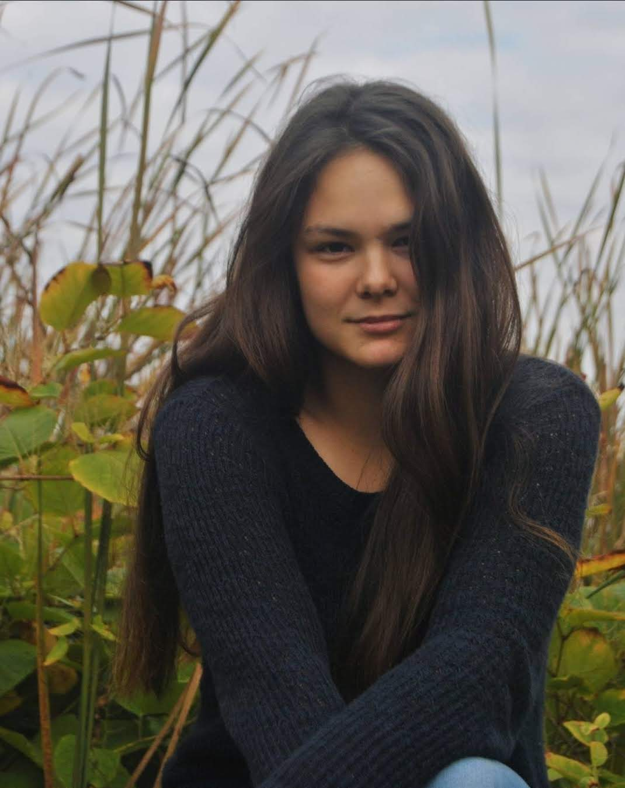

Hi, my name is Iva!
 I recently graduated from Cornell University and now work at Align Technology in Materials Engineering! This website should give you a glance at the work I've done so far in my career, as well as who I am outside of that.
Feel free to scroll around!
My interests
Career-wise, I am most interested in the intersection between Materials Engineering and Sustainability at the moment, especially about the development of engineering processses related to materials and renewable energies fields, including thin-film solar cell innovation. If you'd like to learn more about why I am passionate about Sustainability, click on the waterfall!Recently, I've also been looking to improve my creative skills outside of work! I want to learn more about the different ways I can channel my creativity with writing, graphic design, and coding. Throughout my education, I've practiced both scientific writing, as well as more descriptive and narrative writing. And as of now, I have programming experience with Python, Java, and MATLAB, and I have also conducted computational research using Linux.
To improve my programming skills, I made this website with HTML! And I am hoping this reaches an audience that could help me improve my other creative skills through projects or suggestions.
Please feel to reach out to me using my contact info at the bottom of this page!
Education
In December of 2021, I earned a B.A. in Chemistry and Chemical Biology with minors in Physics and Environmental Sciences. The most important technical courses I've taken to earn my Bachelor's degree are:
- Organic Chemistry I and II
- Experimental Organic Chemistry
- Physical Chemistry
- Inorganic Chemistry
- Water Chemistry for Environmental Engineering
- Laboratory in Biochemistry and Molecular Biology
- Fundamentals of Physics I and II
- Oscillations, Waves, and Quantum Physics
- Intermediate Experimental Physics
- Basics of Quantum Mechanics
- Programming with Python
- Object-Oriented Programming and Data Structures
However, I've also taken writing-focused courses to further expand my knowledge and skills outside of STEM, including:
- Writing about Literature
- Introduction to Philosophy
- Cultural Identities
- Cultural Diversity and Contemporary Issues
- Conflict Resolution and Negotiation
In addition to all of my classes, I've also gained skills outside of the classroom setting through either independent projects or research experience.

Career Goals
After spending most of my life in academic settings, my first task was to get industry experience. My ambition was to be in an environment that is unfamiliar (and even slightly uncomfortable without the stability of school) in order to learn more about how I am and what I would like to accomplish with my career.
Afterwards, I will likely attend graduate school in the future to further my technical knowledge with a Ph.D. in Materials Science and Nanoengineering. One day, I hope to work on energy-related applications as I believe the traditional ways of energy harvest and usage are harming both us and our planet. And as someone who aspires to use my resources to give back in the most effective way, I believe researching ways to prevent further development of potential global catastrophes in the future is my calling.
Research
So far, I've conducted research in Biological Engineering, Environmental Engineering, and Materials Chemistry. My goal during my Bachelor studies was to work in various environments in order to both gain more clarity about my interests, as well as improve my teamwork and organization skills as I learn to adjust to each new working environment. After graduating, I was able to become a Research Assistant at the Reid lab until I started working at Align Technology as an Associate Scientist. Below are short summaries of my current role, as well as the research I've done during my undergraduate studies.
Materials Research as an Associate Scientist
Align Technology
As an Associate Scientist (aka Medical Device Development Engineer), my responsibilities at this role include but are not limited to:
- Synthetic chemistry experiments, formulations, and characterizations
- Designing new reactions and studying structure-property relationships
- Support activities related to new product development, process improvements, or further product/equipment evaluation
- Direct lab bench work for product development and physical property testing duties
The company's website can be found here.
Environmental Engineering Research
Reid Lab
I developed an L-DOPA assay of oxidative activity in woodchip sequencing batch reactors to assess the effects of the bioreactor on oxidative conditions.
The goal was to quantify oxidative activity in bioreactors, relate oxidative activity to carbon release rates, and assess how conditions such as an excess of Mn(II) or Fe(II) affect oxidative activities.
I also worked on another assay whose aim was to spectrophotometrically detect the presence of the Mn3+-malonate complexes formed by the enzymes in bioreactors that oxidize Mn(II) to Mn(III).
The lab's website can be found here.
My undergraduate thesis regarding this work can be found on my LinkedIn profile here.
Materials Chemistry Research
REU Internship in Feng Lab
As a student in the MacREU summer program, I worked in Dr.Feng's lab during the summer of 2021. The MacREU program was a competitive REU summer internship where
students worked on projects related to the growth and application of thin films or monolayer materials. Specifically, I worked on synthesis of new MOFs (metal-organic frameworks, or
crystalline materials composed of metal ions that are coordinated to organic ligands with pores that have the potential to be stable enough to be refilled with other compounds) with the tris(pyridin-4-yl)amine (tpa) organic linker.
Links regarding the REU internship:
- Click here to see the research poster summarizing my work in the Feng Lab.
- The lab's website can be found here.
- The program's website can be found here.
Atmospheric Data Research
Hess Lab
I conducted literary research on how varying environmental conditions affect the chemical composition of the atmosphere, as well as analyzed the lognormality of the distribution of atmospheric data.
Following this literary research, I also computationally researched the difference in the concentration of tropospheric ozone during summer and winter seasons by writing a graphing program using Linux and Vim.
The Hess Lab focuses on the development of atmospheric chemical models which could be used to interpet atmospheric measurements and therefore improve our understanding of atmospheric chemistry.
The lab's website can be found here.
My Projects
Soon, you'll be able to see some of the side projects, other than this website, that I've been working on right here.
My Extracurriculars
Some of the clubs I've been involved in during my undergraduate studies are:
1. The Language House
2. Reserve Tennis Club
3. Coffee Club
4. The European Cultural Society
5. Creme de Cornell
Now as a recent graduate, I am focused on improving my mental and physical health. As such, I have actively been playing tennis and volleyball with friends and strangers alike outside of my work. And as someone who is also interested in creative skills, I have spent time practicing graphic design as well.
Get in touch
Please feel free to contact me and I will get back to you very soon!
-
Address
Sunnyvale, CA 94085
USA -
Email
ip228@cornell.edu -
Phone
(315) 244-9189 -
Social